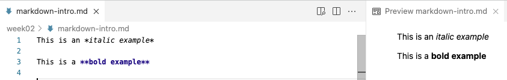
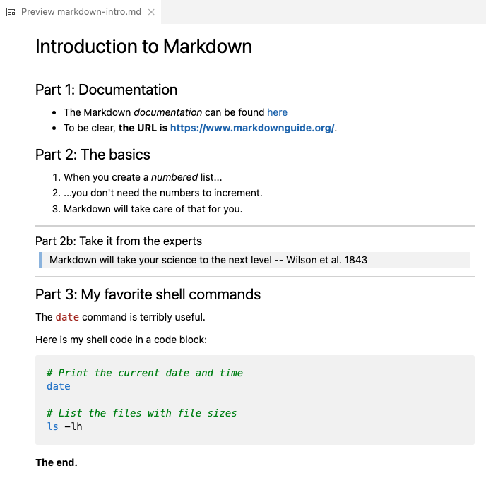
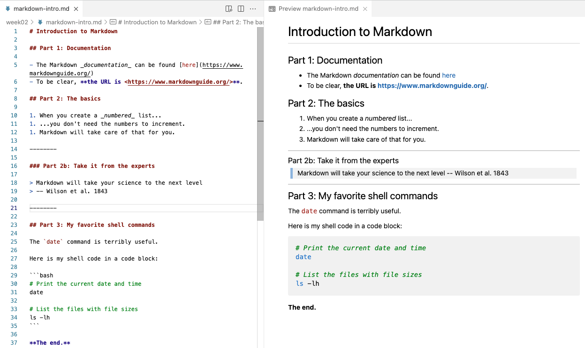

Markdown
1 An introduction to Markdown
Markdown is a very lightweight text markup language that is:
- Easy to write — a dozen or so syntax constructs is nearly all you use.
- Easy to read — also in its raw (non-rendered) form.
For example, surrounding one or more characters by single or double asterisks (*) will make those characters italic or bold, respectively:
- When you write
*italic example*this will be rendered as: italic example. - When you write
**bold example**this will be rendered as: bold example.
Source Markdown files are plain text files (they can be “rendered” to HTML or PDF). I recommend that you use Markdown files (.md) instead of plain text (.txt) files to document your research projects as outlined in the previous session.
Learn more about Markdown and its syntax in this excellent documentation: https://www.markdownguide.org.
Markdown in VS Code
Below, we’ll be trying some Markdown syntax in the markdown-intro.md file we created earlier.
When you save a file in VS Code with an .md extension, as you have done:
- Some formatting will be automatically applied in the editor.
- You can open a live rendered preview by pressing the icon to “Open Preview to the Side” (top-right corner):
That will look something like this in VS Code:

1.1 Most common syntax
Here is an overview of the most commonly used Markdown syntax:
| Syntax | Result |
|---|---|
| *italic* | italic (alternative: single _) |
| **bold** | bold (alternative: double _) |
| [link text](website.com) | link text |
<https://website.com> |
Clickable link: https://website.com |
| # My Title | Header level 1 (largest) |
| ## My Section | Header level 2 |
| ### My Subsection | Header level 3 – and so forth |
| - List item | Unordered (bulleted) list |
| 1. List item | Ordered (numbered) list |
| `inline code` | inline code |
``` |
Start/end of generic code block (on its own line) |
```bash |
Start of bash code block (end with ```) |
--- |
Horizontal rule (line) |
| > Text | Blockquote (like quoted text in emails) |
|  | [The figure will be inserted] |
Let’s try some of these things — type:
# Introduction to Markdown
## Part 1: Documentation
- The Markdown _documentation_ can be found [here](https://www.markdownguide.org/)
- To be clear, **the URL is <https://www.markdownguide.org/>**.
## Part 2: The basics
1. When you create a _numbered_ list...
1. ...you don't need the numbers to increment.
1. Markdown will take care of that for you.
--------
### Part 2b: Take it from the experts
> Markdown will take your science to the next level
> -- Wilson et al. 1843
--------
## Part 3: My favorite shell commands
The `date` command is terribly useful.
Here is my shell code in a code block:
```bash
# Print the current date and time
date
# List the files with file sizes
ls -lh
```
**The end.**That should be previewed/rendered as:


1.2 Tables
Tables are not all that convenient to create in Markdown, but you can do it as follows.
This:
| city | inhabitants |
|——————|——————|
| Columbus | 906 K |
| Cleveland | 368 K |
| Cincinnati | 308 K |
Will be rendered as:
| city | inhabitants |
|---|---|
| Columbus | 906 K |
| Cleveland | 368 K |
| Cincinnati | 308 K |
1.3 Whitespace
It’s recommended (in some cases necessary) to leave a blank line between different sections: lists, headers, etc.:
## Section 2: List of ... - Item 1 - Item 2 For example, ....
- A blank line between regular text will start a new paragraph, with some whitespace between the two:
This:
Paragraph 1.
Paragraph 2.Will be rendered as:
Paragraph 1.
Paragraph 2.
- Whereas a single newline will be completely ignored!:
This:
Paragraph 1.
Paragraph 2.Will be rendered as:
Paragraph 1. Paragraph 2.
This:
Writing
one
word
per
line.Will be rendered as:
Writing one word per line.
- Multiple consecutive spaces and blank line will be “collapsed” into a single space/blank line:
This:
Empty spaceWill be rendered as:
Empty space
This:
Many
blank linesWill be rendered as:
Many
blank lines
- A single linebreak can be forced using two or more spaces (i.e., press the spacebar twice) or a backslash
\after the last character on a line:
This:
My first sentence.\
My second sentence.Will be rendered as:
My first sentence.
My second sentence.
- If you want more vertical whitespace than what is provided between paragraphs, you’ll have to resort to HTML1: each
<br>item forces a visible linebreak.
This:
One <br> word <br> per line
and <br> <br> <br> <br> <br>
several blank lines.Will be rendered as:
One
word
per line and
several blank lines.
If you need “inline colored text”, you can also use HTML:
inline <span style="color:red">colored</span> text.For systematic styling of existing or custom elements, you need to use CSS. For example, including the following anywhere in a Markdown document will turn all level 1 headers (
#) red:<style> h1 {color: red} </style>
1.4 Markdown extensions – Markdown for everything?!
Several Markdown extensions allow Markdown documents to contain code that runs, and whose output can be included in rendered documents:
- R Markdown (
.Rmd) and the follow-up Quarto - Jupyter Notebooks
There are many possibilities with Markdown! For instance, consider that:
- This website is written using Quarto.
- R Markdown/Quarto also has support for citations, journal-specific formatting, etc., so you can even write manuscripts with it.
I very rarely render “plain” Markdown files because:
- Markdown source is so well readable
- GitHub will render Markdown files for you
That said, if you do need to render a Markdown file to, for example, HTML or PDF, use Pandoc:
pandoc README.md > README.html
pandoc -o README.pdf README.mdFor installation (all OS’s): see https://pandoc.org/installing.html.
The below is “extended syntax” that is not supported by all interpreters:
| Syntax | Result |
|---|---|
| ~~strikethrough~~ | |
| Footnote ref[^1] | Footnote ref1 |
| [^1]: Text | The actual footnote |
Footnotes
You can use any HTML markup in Markdown!↩︎